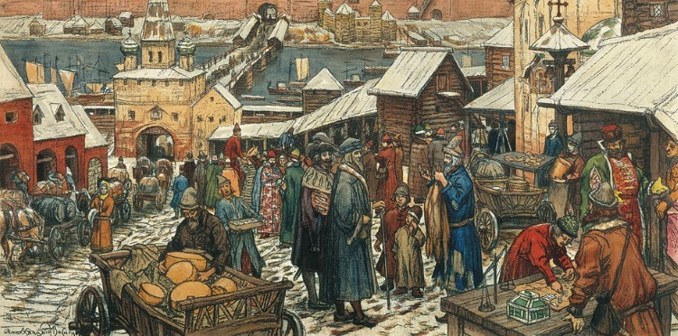

Revival of Trade
Trade is now booming, and trade became regular between Flanders and Italy. France also wanted to encourage trade and started annual trade fairs. Northern Europe would bring furs, honey, cloth and hemp to trade for armor and weapons. Slowly, an econmical currency arised, based on real money and not goods.
Revival of Cities
Revival of Trade influenced revival of cities. After the tragic events of the empire, cities were abandonded. After trade came back, merchants moved to older Roman cities. This was later followed by Craftsman and Artisans. Usually built by abandoned castles, because of the nearby waterways or trade routes. Law's came up, and cities developed there own government. Woman raised children and made meals while men built and governed.
